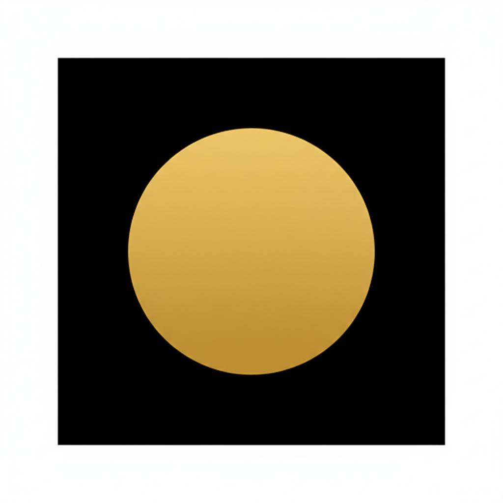
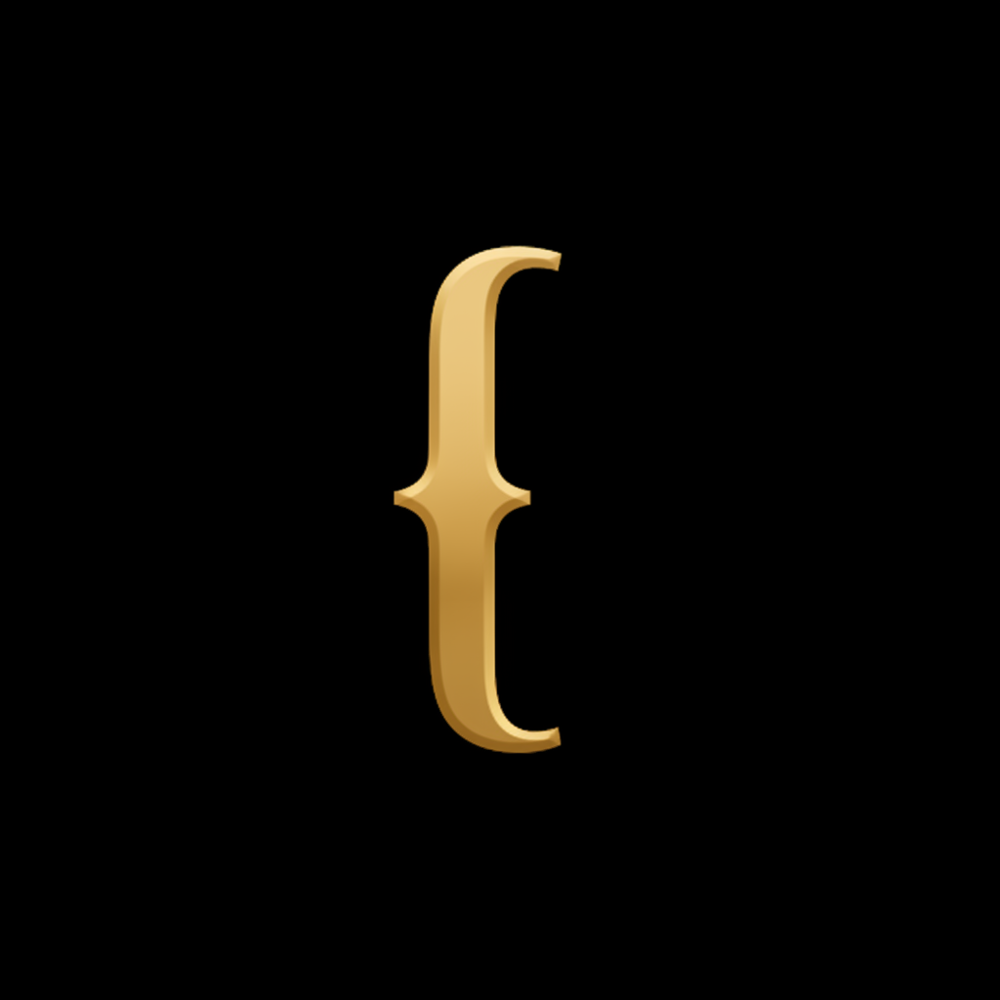
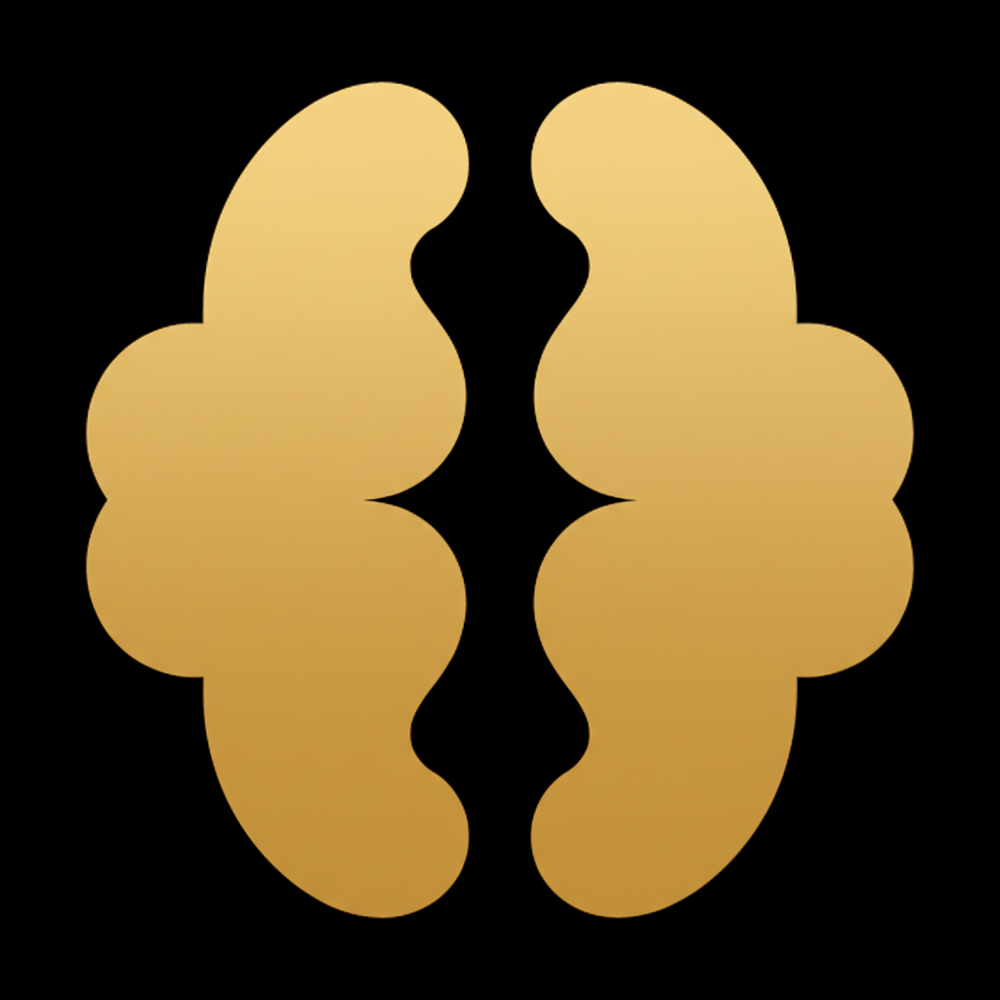

Icon Concepts
Six directions for the Cortex app icon. Gold on dark.
Concepts
The Serif C
Bold serif letter. The Notion playbook — radical simplicity, maximum confidence.
Serif C + Node
The C with a knowledge node nested in the aperture. Connects to the "gold dot" brand element.

Neural Asterisk
Synapse firing. Radiating lines suggest a knowledge node activating. Abstract but evocative.
Neural Node
Central dot with radiating connections. The atomic unit of a knowledge graph.

The Gold Dot
Pure confidence. A single circle. The node. The concept. The knowledge point.

The Open Bracket
A curly brace — the typography of containment and structure. Intellectual, typographic.
Bracket Variations (No Center Bar)
Exploring the brace as a pure curve — no serifs, no horizontal bar.
Open Curve
A single flowing S-curve. Like the spine of an open book.
Minimal Brace
Two S-curves meeting at a point. Calligraphic, bold.
Thin Elegant
Fine gold pen stroke. Delicate, sinuous, refined.
Thick Modern
Bold geometric arcs meeting at a point. Logo-mark energy.
Brain + Bracket Explorations
Leaning into the double-reading: curly brace that also reads as brain hemispheres. Bracket = structure, brain = cortex.

Mirrored Hemispheres
Two curves meeting at points. Reads as brace AND brain halves.
Top-Down Brain
Rotated brace as brain viewed from above. Two lobes, narrow center.
Facing Commas
Two comma shapes facing each other. Walnut/brain silhouette.
Profile Brace
Brace as brain in profile. Two arcs meeting at a left point.
Outline Brain
Single continuous line forming two lobes. Stroke only, no fill.
Brain + Node
Two hemispheres with a gold dot in the center gap. Brain + brace + knowledge node.
Size Test
How the top concepts hold up from app icon to favicon.
Serif C
128px (App Store)
60px (Mobile)
32px (Tab)
16px (Favicon)
Neural Asterisk
128px (App Store)
60px (Mobile)
Gold Dot
128px (App Store)
60px (Mobile)
32px (Tab)
16px (Favicon)
Wordmark Pairings
How each icon sits next to the "cortex" wordmark in the sidebar.
cortex
cortex
cortex
cortex
cortex
current (dot only)